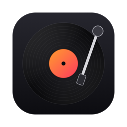

YouTube DJ
Privacy policy
Last updated: October 20, 2026
In short: YouTube DJ runs entirely on your Mac. If you sign in with Google, it gets read-only access to your YouTube account and uses it only to show your own playlists and liked music in the app. Nothing is sent to the developer or anyone else, and you can remove the access at any time.
What YouTube DJ is
YouTube DJ is a desktop app for macOS, made by Amir, that lets you mix YouTube tracks on two virtual decks. It runs locally on your computer. There is no YouTube DJ server, account system, analytics or advertising.
Signing in with Google (optional)
You can use YouTube DJ without signing in. If you choose Sign in with Google, you sign in on Google's own page in your web browser. YouTube DJ never sees your Google password.
YouTube DJ requests a single permission, "See your YouTube account" (https://www.googleapis.com/auth/youtube.readonly). It cannot upload, delete, like, comment or change anything in your account. With this permission YouTube DJ reads, through the YouTube Data API:
- your YouTube channel name, to show who you're signed in as;
- the list of your playlists, and the videos in a playlist when you open it;
- your liked videos, to show your liked music.
This information is used only to display your playlists and liked music inside the app, so you can play and mix them. It is not used for any other purpose.
Where your data is kept
- The sign-in token from Google is stored only on your Mac, in YouTube DJ's data folder (
~/Library/Application Support/YouTube DJ), readable only by your user account. - The last playlist you opened, your settings, cue points and similar preferences are stored in the app's local storage on your Mac.
- Audio for tracks you load is cached in the same data folder so it doesn't need downloading again. This uses only publicly available YouTube content and never uses your Google account.
YouTube DJ does not send any of this to the developer or to any third party. The only services it contacts are Google's (to sign in and read your YouTube data), YouTube (to load the tracks you choose) and LRCLIB, a public lyrics database, which receives the title, artist and length of each track you load to look up its lyrics (for the lyrics view, and to know where the track sings when mixing). LRCLIB never receives any of your Google data. It also checks this website for the latest version number, to tell you when an update is out; that request carries nothing about you.
Sharing
YouTube DJ does not sell, share, transfer or disclose your Google user data to anyone. It is not used for advertising, and it is not used to train any AI or machine-learning models.
YouTube DJ's use and transfer of information received from Google APIs adheres to the Google API Services User Data Policy, including the Limited Use requirements.
YouTube API Services
YouTube DJ uses YouTube API Services. By using YouTube DJ's Google sign-in you agree to be bound by the YouTube Terms of Service. Google's handling of your data is described in the Google Privacy Policy.
Removing access and deleting your data
- Sign out in YouTube DJ deletes the sign-in token from your Mac and revokes YouTube DJ's access at Google.
- You can also remove access at any time in your Google Account's third-party access settings.
- To remove everything YouTube DJ stored, quit the app and delete
~/Library/Application Support/YouTube DJ.
Children
YouTube DJ is not directed at children under 13 and does not knowingly collect data from them.
Changes
If this policy changes, the updated version will be posted on this page with a new date.
Contact
Questions about this policy? Open an issue, or use the support email shown on YouTube DJ's Google sign-in screen.